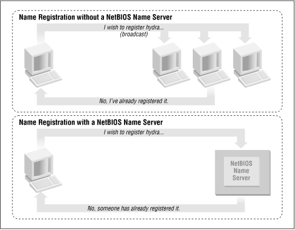
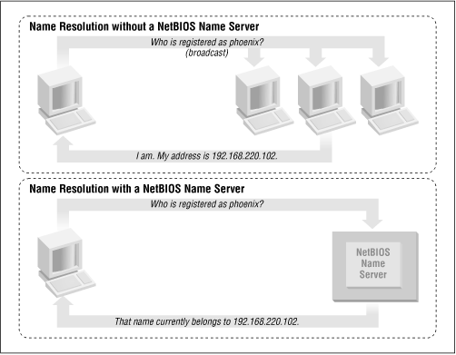
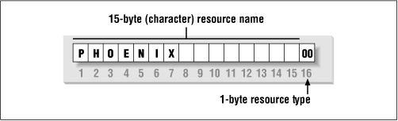

Using Samba
Robert Eckstein, David Collier-Brown, Peter Kelly1st Edition November 1999
1-56592-449-5, Order Number: 4495
416 pages, $34.95
|
|
Using SambaRobert Eckstein, David Collier-Brown, Peter Kelly1st Edition November 1999 1-56592-449-5, Order Number: 4495 416 pages, $34.95 |
1.3 Getting Familiar with a SMB/CIFS Network
Now that you have had a brief tour of Samba, let's take some time to get familiar with Samba's adopted environment: an SMB/CIFS network. Networking with SMB is significantly different from working with a Unix TCP/IP network, because there are several new concepts to learn and a lot of information to cover. First, we will discuss the basic concepts behind an SMB network, followed by some Microsoft implementations of it, and finally we will show you where a Samba server can and cannot fit into the picture.
1.3.1 Understanding NetBIOS
To begin, let's step back in time. In 1984, IBM authored a simple application programming interface (API) for networking its computers called the Network Basic Input/Output System (NetBIOS). The NetBIOS API provided a rudimentary design for an application to connect and share data with other computers.
It's helpful to think of the NetBIOS API as networking extensions to the standard BIOS API calls. With BIOS, each low-level call is confined to the hardware of the local machine and doesn't need any help traveling to its destination. NetBIOS, however, originally had to exchange instructions with computers across IBM PC or Token Ring networks. It therefore required a low-level transport protocol to carry its requests from one computer to the next.
In late 1985, IBM released one such protocol, which it merged with the NetBIOS API to become the NetBIOS Extended User Interface (NetBEUI). NetBEUI was designed for small local area networks (LANs), and it let each machine claim a name (up to 15 characters) that wasn't already in use on the network. By a "small LAN," we mean fewer than 255 nodes on the network - which was considered a practical restriction in 1985!
The NetBEUI protocol was very popular with networking applications, including those running under Windows for Workgroups. Later, implementations of NetBIOS over Novell's IPX networking protocols also emerged, which competed with NetBEUI. However, the networking protocols of choice for the burgeoning Internet community were TCP/IP and UDP/IP, and implementing the NetBIOS APIs over those protocols soon became a necessity.
Recall that TCP/IP uses numbers to represent computer addresses, such as 192.168.220.100, while NetBIOS uses only names. This was a major issue when trying to mesh the two protocols together. In 1987, the Internet Engineering Task Force (IETF) published a series of standardization documents, titled RFC 1001 and 1002, that outlined how NetBIOS would work over a TCP/UDP network. This set of documents still governs each of the implementations that exist today, including those provided by Microsoft with their Windows operating systems as well as the Samba suite.
Since then, the standard this document governs has become known as NetBIOS over TCP/IP, or NBT for short. The NBT standard (RFC 1001/1002) currently outlines a trio of services on a network:
The name service solves the name-to-address problem mentioned earlier; it allows each computer to declare a specific name on the network that can be translated to a machine-readable IP address, much like today's DNS on the Internet. The datagram and session services are both secondary communication protocols used to transmit data back and forth from NetBIOS machines across the network.
1.3.2 Getting a Name
For a human being, getting a name is easy. However, for a machine on a NetBIOS network, it can be a little more complicated. Let's look at a few of the issues.
In the NetBIOS world, when each machine comes online, it wants to claim a name for itself; this is called name registration. However, no two machines in the same workgroup should be able to claim the same name; this would cause endless confusion for any machine that wanted to communicate with either machine. There are two different approaches to ensuring that this doesn't happen:
Use a NetBIOS Name Server (NBNS) to keep track of which hosts have registered a NetBIOS name.
Allow each machine on the network to defend its name in the event that another machine attempts to use it.
Figure 1.8 illustrates a (failed) name registration, with and without a NetBIOS Name Server.
Figure 1.8: NBNS versus non-NBNS name registration
In addition, there must be a way to resolve a NetBIOS name to a specific IP address as mentioned earlier; this is known as name resolution. There are two different approaches with NBT here as well:
Have each machine report back its IP address when it "hears" a broadcast request for its NetBIOS name.
Figure 1.9 illustrates the two types of name resolution.
Figure 1.9: NBNS versus non-NBNS name resolution
As you might expect, having an NBNS on your network can help out tremendously. To see exactly why, let's look at the non-NBNS method.
Here, when a client machine boots, it will broadcast a message declaring that it wishes to register a specified NetBIOS name as its own. If nobody objects to the use of the name after multiple registration attempts, it keeps the name. On the other hand, if another machine on the local subnet is currently using the requested name, it will send a message back to the requesting client that the name is already taken. This is known as defending the hostname. This type of system comes in handy when one client has unexpectedly dropped off the network - another can take its name unchallenged - but it does incur an inordinate amount of traffic on the network for something as simple as name registration.
With an NBNS, the same thing occurs, except that the communication is confined to the requesting machine and the NBNS server. No broadcasting occurs when the machine wishes to register the name; the registration message is simply sent directly from the client to NBNS server and the NBNS server replies whether or not the name is already taken. This is known as point-to-point communication, and is often beneficial on networks with more than one subnet. This is because routers are often preconfigured to block incoming packets that are broadcast to all machines in the subnet.
The same principles apply to name resolution. Without an NBNS, NetBIOS name resolution would also be done with a broadcast mechanism. All request packets would be sent to each computer in the network, with the hope that one machine that might be affected will respond directly back to the machine that asked. At this point, it's clear that using an NBNS server and point-to-point communication for this purpose is far less taxing on the network than flooding the network with broadcasts for every name resolution request.
1.3.3 Node Types
How can you tell what strategy each client on your network will use when performing name registration and resolution? Each machine on an NBT network earns one of the following designations, depending on how it handles name registration and resolution: b-node, p-node, m-node, and h-node. The behaviors of each type of node are summarized in Table 1.1.
Table 1.1: NetBIOS Node Types Role
Value
b-node
Uses broadcast registration and resolution only.
p-node
Uses point-to-point registration and resolution only.
m-node
Uses broadcast for registration. If successful, it notifies the NBNS server of the result. Uses broadcast for resolution; uses NBNS server if broadcast is unsuccessful.
h-node (hybrid)
Uses NBNS server for registration and resolution; uses broadcast if the NBNS server is unresponsive or inoperative.
In the case of Windows clients, you will usually find them listed as h-nodes or hybrid nodes. Incidentally, h-nodes were invented later by Microsoft, as a more fault-tolerant route, and do not appear in RFC 1001/1002.
You can find out the node type of any Windows machine by typing the command
ipconfig/alland searching for the line that saysNode Type.C:\> ipconfig /allWindows 98 IP Configuration ... Node Type . . . . . . . . . . : Hybrid ...1.3.4 What's in a Name?
The names NetBIOS uses are quite different from the DNS hostnames you might be familiar with. First, NetBIOS names exist in a flat namespace. In other words, there are no qualifiers such as ora.com or samba.org to section off hostnames; there is only a single unique name to represent each computer. Second, NetBIOS names are allowed to be only 15 characters, may not begin with an asterisk (*), and can consist only of standard alphanumeric characters (a-z, A-Z, 0-9) and the following:
! @ # $ % ^ & ( ) - ' { } . ~Although you are allowed to use a period (.) in a NetBIOS name, we recommend against it because those names are not guaranteed to work in future versions of NetBIOS over TCP/IP.
It's not a coincidence that all valid DNS names are also valid NetBIOS names. In fact, the DNS name for a Samba server is often reused as its NetBIOS name. For example, if you had a machine
phoenix.ora.com, its NetBIOS name would likely be PHOENIX (followed by 8 blanks).1.3.4.1 Resource names and types
With NetBIOS, a machine not only advertises its presence, but also tells others what types of services it offers. For example,
phoenixcan indicate that it's not just a workstation, but is also a file server and can receive WinPopup messages. This is done by adding a 16th byte to the end of the machine (resource) name, called the resource type, and registering the name more than once. See Figure 1.10.Figure 1.10: The structure of NetBIOS names
The one-byte resource type indicates a unique service the named machine provides. In this book, you will often see the resource type shown in angled brackets (<>) after the NetBIOS name, such as:
PHOENIX<00>You can see which names are registered for a particular NBT machine using the Windows command-line NBTSTAT utility. Because these services are unique (i.e., there cannot be more than one registered), you will see them listed as type UNIQUE in the output. For example, the following partial output describes the
hydraserver:D:\> NBTSTAT -a hydraNetBIOS Remote Machine Name Table Name Type Status --------------------------------------------- HYDRA <00> UNIQUE Registered HYDRA <03> UNIQUE Registered HYDRA <20> UNIQUE Registered ...This says the server has registered the NetBIOS name
hydraas a machine (workstation) name, a recipient of WinPopup messages, and a file server. Some possible attributes a name can have are listed in Table 1.2.
Table 1.2: NetBIOS Unique Resource Types Named Resource
Hexidecimal Byte Value
Standard Workstation Service
00
Messenger Service (WinPopup)
03
RAS Server Service
06
Domain Master Browser Service (associated with primary domain controller)
1B
Master Browser name
1D
NetDDE Service
1F
Fileserver (including printer server)
20
RAS Client Service
21
Network Monitor Agent
BE
Network Monitor Utility
BF
Note that because DNS names don't have resource types, the designers intentionally made hexidecimal value 20 (an ASCII space) default to the type for a file server.
1.3.4.2 Group names and types
SMB also uses the concept of groups, with which machines can register themselves. Earlier, we mentioned that the machines in our example belonged to a workgroup, which is a partition of machines on the same network. For example, a business might very easily have an ACCOUNTING and a SALES workgroup, each with different servers and printers. In the Windows world, a workgroup and an SMB group are the same thing.
Continuing our NBTSTAT example, the
hydraSamba server is also a member of the SIMPLE workgroup (the GROUP attribute hex 00), and will stand for election as a browse master (GROUP attribute 1E). Here is the remainder of the NBTSTAT utility output:NetBIOS Remote Machine Name Table, continued Name Type Status --------------------------------------------- SIMPLE <00> GROUP Registered SIMPLE <1E> GROUP Registered ..__MSBROWSE__. <01> GROUP RegisteredThe possible group attributes a machine can have are illustrated in Table 1.3. More information is available in Windows NT in a Nutshell by Eric Pearce, also published by O'Reilly.
Table 1.3: NetBIOS Group Resource Types Named Resource
Hexidecimal Byte Value
Standard Workstation group
00
Logon Server
1C
Master Browser name
1D
Normal Group name (used in browser elections)
1E
Internet Group name (administrative)
20
<01><02>__MSBROWSE__<02>01
The final entry,
__MSBROWSE__, is used to announce a group to other master browsers. The nonprinting characters in the name show up as dots in a NBTSTAT printout. Don't worry if you don't understand all of the resource or group types. Some of them you will not need with Samba, and others you will pick up as you move through the rest of the chapter. The important thing to remember here is the logistics of the naming mechanism.1.3.5 Datagrams and Sessions
At this point, let's digress to introduce another responsibility of NBT: to provide connection services between two NetBIOS machines. There are actually two services offered by NetBIOS over TCP/IP: the session service and the datagram service. Understanding how these two services work is not essential to using Samba, but it does give you an idea of how NBT works and how to troubleshoot Samba when it doesn't work.
The datagram service has no stable connection between one machine and another. Packets of data are simply sent or broadcast from one machine to another, without regard for the order that they arrive at the destination, or even if they arrive at all. The use of datagrams is not as network intensive as sessions, although they can bog down a network if used unwisely (remember broadcast name resolution earlier?) Datagrams, therefore, are used for quickly sending simple blocks of data to one or more machines. The datagram service communicates using the simple primitives shown in Table 1.4.
Table 1.4: Datagram Primitives Primitive
Description
Send Datagram
Send datagram packet to machine or groups of machines.
Send Broadcast Datagram
Broadcast datagram to any machine waiting with a Receive Broadcast Datagram.
Receive Datagram
Receive a datagram from a machine.
Receive Broadcast Datagram
Wait for a broadcast datagram.
The session service is more complex. Sessions are a communication method that, in theory, offers the ability to detect problematic or inoperable connections between two NetBIOS applications. It helps to think of an NBT session in terms of a telephone call.[5] A full-duplex connection is opened between a caller machine and a called machine, and it must remain open throughout the duration of their conversation. Each side knows who the caller and the called machine is, and can communicate with the simple primitives shown in Table 1.5.
[5] As you can see in RFC 1001, the telephone analogy was strongly evident in the creation of the NBT service.
Table 1.5: Session Primitives Primitive
Description
Call
Initiate a session with a machine listening under a specified name.
Listen
Wait for a call from a known caller or any caller.
Hang-up
Exit a call.
Send
Send data to the other machine.
Receive
Receive data from the other machine.
Session Status
Get information on requested sessions.
Sessions are the backbone of resource sharing on an NBT network. They are typically used for establishing stable connections from client machines to disk or printer shares on a server. The client "calls" the server and starts trading information such as which files it wishes to open, which data it wishes to exchange, etc. These calls can last a long time - hours, even days - and all of this occurs within the context of a single connection. If there is an error, the session software (TCP) will retransmit until the data is received properly, unlike the "punt-and-pray" approach of the datagram service (UDP).
In truth, while sessions are supposed to be able to handle problematic communications, they often don't. As you've probably already discovered when using Windows networks, this is a serious detriment to using NBT sessions. If the connection is interrupted for some reason, session information that is open between the two computers can easily become invalidated. If that happens, the only way to regain the session information is for the same two computers to call each other again and start over.
If you want more information on each of these services, we recommend you look at RFC 1001. However, there are two important things to remember here:
Sessions always occur between two NetBIOS machines - no more and no less. If a session service is interrupted, the client is supposed to store sufficient state information for it to re-establish the connection. However, in practice, this is rarely the case.
Datagrams can be broadcast to multiple machines, but they are unreliable. In other words, there is no way for the source to know that the datagrams it sent have indeed arrived at their destinations.
 |
 |
 |
| 1.2 What Can Samba Do For Me? |
 | 1.4 Microsoft Implementations |
© 1999, O'Reilly & Associates, Inc.